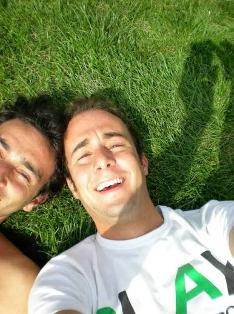

Eva and Franco Mattes
Riccardo Uncut
2018

Riccardo Uncut is a video made from thousands of personal photographs and videos belonging to a person named Riccardo. The images show ordinary moments from his life and create a large collection of personal memories. By turning someone's private images into an artwork, the project raises questions about privacy and who has control over personal photographs and videos once they exist digitally.